Вітальня · журнал «ДентАрт» 2020 №1
Бетті МакКейг: «Стоматологія дарує більше радості, коли ми ділимося досвідом з іншими»
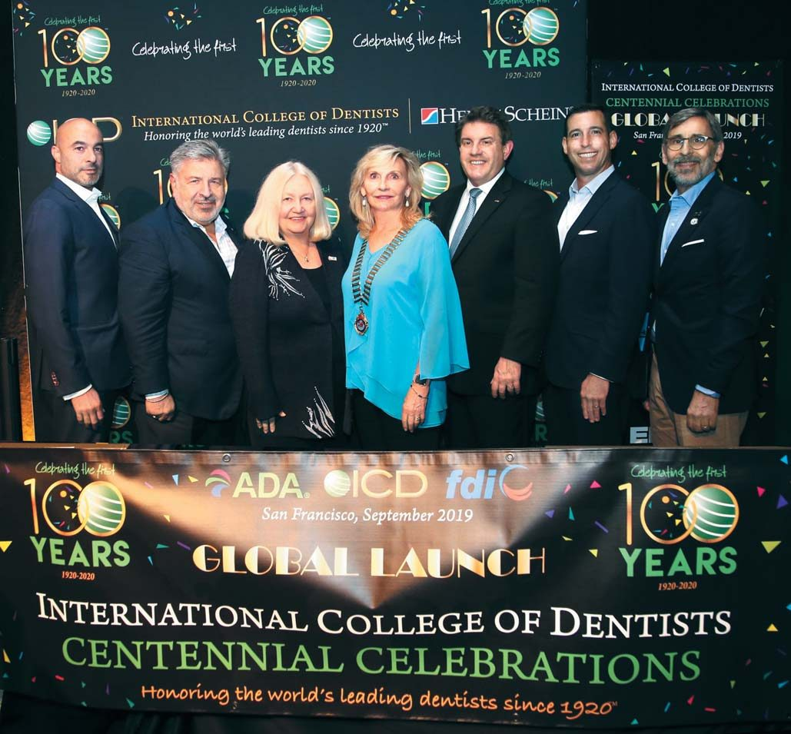
Міжнародна колегія стоматологів (ICD) об'єднує найвідоміших представників професії з багатьох країн світу. Такою невтомною трудівницею на ниві практичної стоматології, освіти й громадської діяльності була й Бетті МакКейг — ад'юнкт-професор кафедри оперативної стоматології Університету Північної Кароліни в Чапел-Хілл (США), президент ICD 2019 року й перша жінка, обрана на пост президента Всесвітньої ради цієї організації.
«Я переконалася, що в кожній країні стоматологи проводять важливі гуманітарні заходи»
— Що було найпам'ятнішим за час, коли Ви очолювали такі поважні організації?
— Одним із найцінніших моментів моєї роботи як регента Дистрикту 16 Секції США була участь у прийнятті в члени організації стоматолога, який колись надихнув мене подати заяву в Стоматологічну школу. Одне з моїх основних переконань — що люди в усьому світі більше схожі, ніж різні, і мої поїздки як міжнародного президента ICD підтвердили це: ми всі хочемо одного й того ж для наших сімей — здоров'я, безпеки, щастя і процвітання. Мені запам'ятався кожен президентський візит, особливо бесіди з колегами, які дозволили відкрити невелике вікно в їхнє життя. Я переконалася, що в кожній країні стоматологи проводять важливі гуманітарні заходи: хтось щороку організовує місійні поїздки, щоб допомогти малозабезпеченим, а на Балі новий член Колегії вирушив на віддалені острови, де не було лікарів. І під час кожного візиту жінки-члени ICD розповідали, як важливо, щоб жінка стала всесвітнім президентом.
«Місцеве лідерство — критерій номер один, щоб вплинути на зміни»
— Залишаються країни, де стоматологічна допомога на дуже низькому рівні. Що мають зробити уряди й як допомагає ICD?
— ICD визнана багатьма світовими лідерами як організація, що володіє знаннями у сфері глобального стоматологічного доступу й освіти. Кожний уряд повинен мати лідера у сфері прийняття рішень, який виступає за базову стоматологічну допомогу для широких верств населення. Чи є в уряді стоматолог, який міг би стати каталізатором цієї пропаганди, і чи є він членом ICD? Місцеве лідерство — критерій номер один, щоб вплинути на зміни. ICD може об'єднувати членів у різних країнах для обміну протоколами, успішними для систем охорони здоров'я. Торік на Саміті ООН з охорони здоров'я міністри В'єтнаму, Бразилії та Південної Африки обговорювали включення гігієни ротової порожнини для широких верств населення.
«Секція США-ICD щорічно присуджує студентські нагороди „Лідерство і гуманність"»
— Розкажіть про програми ICD, спрямовані на підтримку професійного становлення й лідерства студентства.
— Підтримка студентів здійснюється переважно з місцевих дистриктів. У Стоматологічній школі Університету Північної Кароліни є Офіс глобальних ініціатив, який щорічно організовує міжнародні заходи: серед них — прямий обмін студентами з медичним університетом у Молдові, де наші студенти співпрацюють для лікування пацієнтів у дитячому будинку. Дослідження засвідчили, що учні з міжнародним досвідом отримують вищі оцінки, а подорожі в інші культури руйнують бар'єри, позбавляють забобонів і породжують співчуття. Секція США-ICD щорічно присуджує студентські нагороди «Лідерство і гуманність», а місцеві члени приходять на студентські асоціації Глобального Здоров'я поділитися своїми історіями. Молодші кандидати хочуть, щоб у їхніх організацій була мета, — бути залученими й змінити світ на краще.
«Нагромадила тисячі годин високоякісної безперервної освіти»
— Чим був зумовлений Ваш вибір професії?
— Я виросла в сільській Америці, донька орендаря тютюнової ферми; нас вважали бідними, але моя мама твердо вірила, що старанна праця й гарна освіта дадуть дітям кращі перспективи. Хоч я була номером один у випускному класі, ніхто не вважав, що жінка може бути лікарем. Подаючи заявку на стипендію, я обрала стоматологію, бо чоловік учительки (стоматолог) відрекомендував мене своєму стоматологові-гігієністові. Після освіти зубного гігієніста я здобула ступінь бакалавра, працювала гігієністом, а вночі — на курсах студійного мистецтва. Мій роботодавець-стоматолог, який також був художником, практикував стоматологію як тісну співдружність мистецтва і науки, і з його натхненням я подала заяву в Стоматологічну школу.
Один із моїх професорів сказав, що студентами «ми провчилися у школі досить, щоб знати, як продовжувати навчання». З цією мантрою я нагромадила тисячі годин високоякісної безперервної освіти протягом усієї кар'єри. Одразу після школи я купила кабінет загальної стоматології, приймала пацієнтів шість днів на тиждень і водночас здобула ступінь магістра в Управлінні громадської охорони здоров'я. ICD була першою почесною організацією, членом якої я стала й яка єдина попросила мене взяти участь у роботі комітету, — тому я рекомендую лідерам ICD у кожній країні просити своїх членів бути залученими.
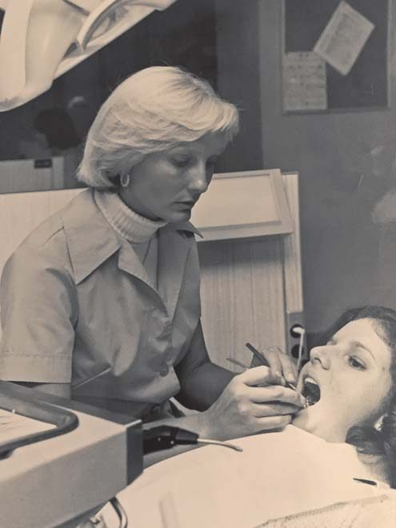
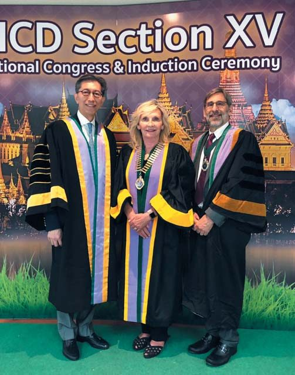
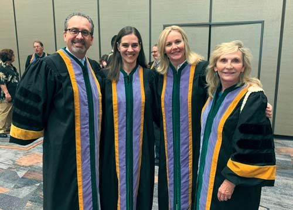
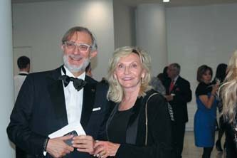
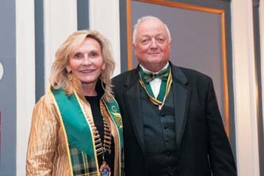
«Життя дивовижне — так хочеться вчитися і так мало часу!»
— Крім стоматології, що ще захоплює Вас у житті?
— Пригодницькі подорожі — мій улюблений спосіб познайомитися з новими регіонами (у 2008 році ми з сім'єю сходили на Кіліманджаро). Разом із чоловіком, доктором Россом Воаном — лікарем інтенсивної терапії новонароджених, ми підтримуємо Інститут онкології Лінебергер. Мій наставник дав мені матеріали для роботи скульптором, тож сподіваюся додати скульптуру до своїх навичок. Я завзятий читач, який подорожує з Kindle. Життя дивовижне — так хочеться вчитися і так мало часу!
— Що Ви побажаєте колегам, які читатимуть це інтерв'ю у 13 країнах?
— Стоматологія — найкраща професія у світі, тому цінуйте честь і зусилля, які ви доклали, щоб стати стоматологом, але прийміть і відповідальність за здоров'я людини й людства. Це лідерство зобов'язує бути в курсі найсучасніших знань. Обслуговуйте населення, якому пощастило менше, і будьте наставниками для тих, хто цікавиться стоматологією! Стоматологія дарує більше радості, коли ми не тримаємо знання при собі, а ділимося досвідом і пристрастю з іншими.
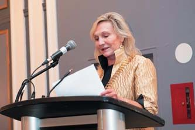
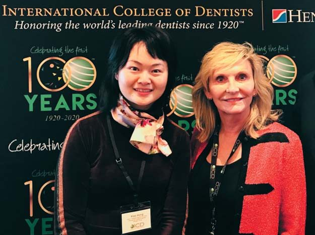
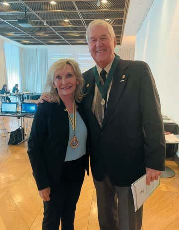
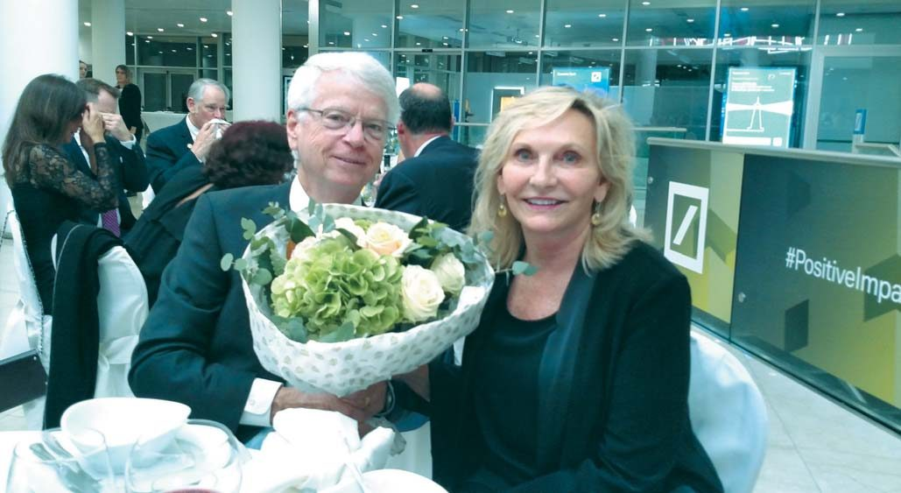
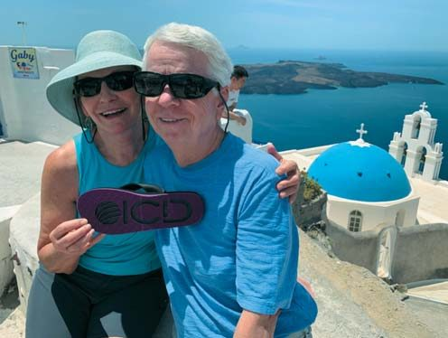
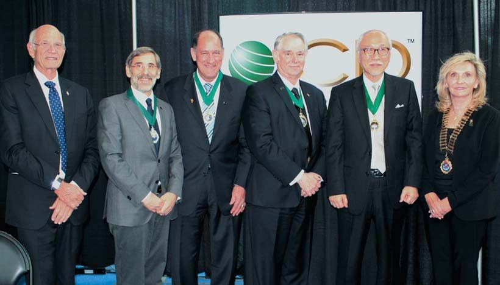
Дорогі читачі! Ви, напевно, звернули увагу, що під світлинами немає підписів. Коли наприкінці минулого року ми звернулися до Бетті МакКейг із пропозицією дати інтерв'ю, вона з ентузіазмом погодилася й, попри зайнятість, оперативно надіслала фото й відповіді. Залишилося уточнити підписи під фотографіями, і вона обіцяла зробити це з понеділка 3 лютого, щойно повернеться додому. Того самого понеділка в аеропорту Денвера у Бетті стався серцевий напад, пов'язаний з аневризмою аорти; термінова госпіталізація й операція не допомогли, і до вечора 3 лютого Бетті не стало. Доктор Бетті МакКейг була яскравим лідером і справжнім ентузіастом — ми запам'ятаємо її активною, радісною, такою, що дивиться з вірою в майбутнє, як у цьому інтерв'ю. Вона буде для нас прикладом самовідданого служіння професії. Дистрикт 15 Європейської секції ICD, редакція «ДентАрту» і клініка-студія «Аполлонія» висловлюють глибоке співчуття рідним і друзям Бетті МакКейг.